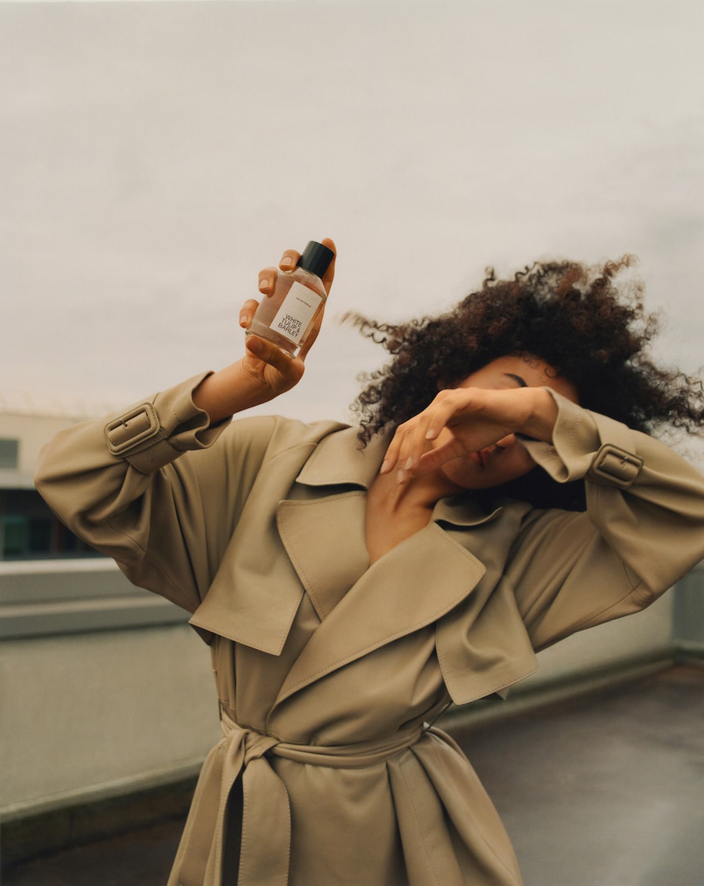

(50 ML) WHITE TULIP &
BARLEY EAU DE PARFUM
$35.90
Fragrance notes: Calendula, White tulip, Barley
The crisp aroma of white tulip is reminiscent of
the scent of honey, sweet, but with a sharp touch.
It works perfectly with the anti-fatigue properties of
the austere aroma of barley.
Glass bottle